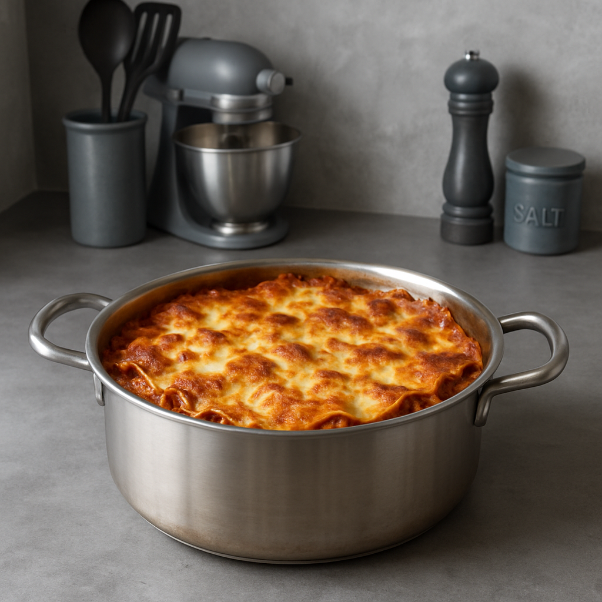

LASAGNA RECIPE

image of cooked lasagna
INGREDIENTS:
- 9 lasagna noodles
- 500g ground beef
- 1 onion (chopped)
- 2 cloves garlic (minced)
- 400g canned tomato sauce or crushed tomato
- 2 tbsp tomato paste
- 1 tbsp salt
- 1 tbsp oregano
- 250g ricotta or cottage cheese
- 2 cups shrdded mozzarella cheese
- 1/4 cup grated parmesan (optional)
DIRECTIONS:
- Cook the noodles:Boil the lasagna noodles according to the package instructions. Drain and set aside
- Cook the beef:In a pan, saute the onions and garlic. Add ground beef and cook until brown
- Add sauce:Stir in tomato sauce, tomato paste,salt, and oregano. Simmer for 10-15 minutes.
- Layer the lasagnain a baking dish:
- spread a bit of meat sauce
- add noodles
- Add ricotta/cottage cheese
- Add mozzarella
- Repeat layers
- Top with remaining cheese
- Bakeat 180 degrees celcius for 30-40 mins until bubbly and golden
- Let rest for 10 mins before serving
Home